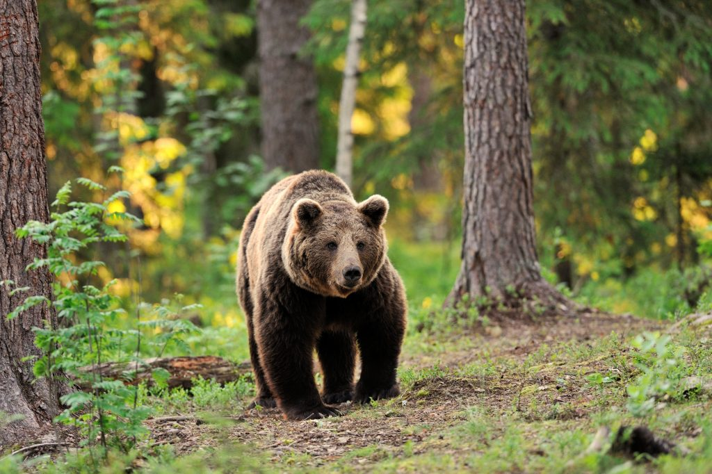

L'os bru (Ursus arctos) és una espècie de mamífer carnívor originari d'Euràsia i Nord-amèrica. Tot i que hi ha una gran variabilitat entre les diferents subespècies, els ossos bruns eurasiàtics solen tenir una llargada d'entre 120 i 210 cm i pesar entre 135 i 250 kg, mentre que els nord-americans generalment tenen una llargada d'aproximadament 250 cm i pesen uns 410 kg. Mentre que la longevitat dels ossos bruns varia segons les subespècies, generalment en estat salvatge viuen una mitjana de 25 anys.
L'os passa l'hivern en un estat d'hibernació. Durant la primavera, l'estiu i la tardor destina la major part del temps a preparar-se per la letargia hivernal, guardant en els teixits adiposos un 75% de l'energia obtinguda dels aliments. En els últims àpats abans de la hibernació ingereix herbes i terra amb menjar perquè es barregi amb la saliva formant un bol alimentari que en arribar a l'intestí gruixut col·lapsi l'orifici secretor i impedeixi la seva sortida. Gràcies a aquest «tap» els aliments es van amuntegant perquè així, a part del greix acumulat, també es puguin extreure nutrients fent la digestió, això sí, d'una manera més lenta. També utilitzen terra i herba per acomodar-se en els seus caus, en els quals dormen amb un somni entretallat, sense variacions en la seva temperatura corporal. Quan desperten, l'obstrucció s'expulsa sense problemes i és també en aquest període quan les osses pareixen (entre el desembre i el gener) i comencen a criar els seus fills.
